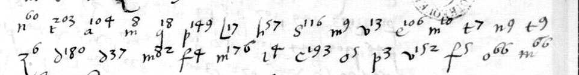
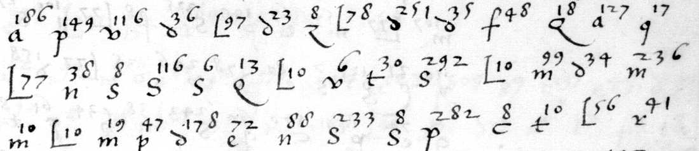
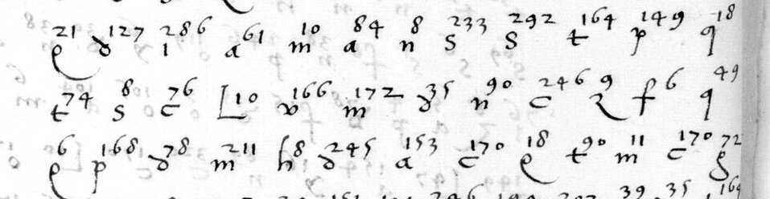
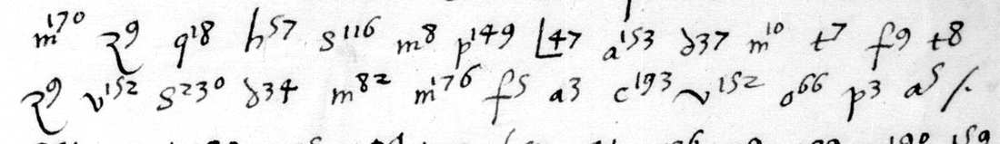
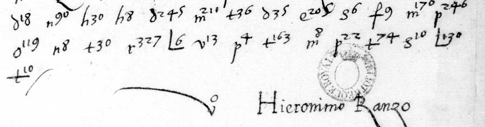

- Document
- Paris, BnF, ms. français 3022, no. 20 (a letter dated Madrid, 11 April 1528, to "Garbino") and the letters signed "Hieronimo Ranzo" in BnF fr. 2988 and fr. 3019 are written in a cipher of letters with small numbers above them.
- State
- The cipher is read for the greater part: 86 % of the cipher text lies in stretches that read as connected sense, and the key table has 779 values.
- Warning
- A model did the work, no palaeographer has checked it, and the reading rests on D. Bourdeau's transcription, which is not copied here.
The build of the cipher
A group is a base letter and a number. On this page a group is written as the letter and then the number: m176 is the letter m with the number 176.
| Numbers | What they are |
|---|---|
| 0 to 5 | Nulls. They stand between words, in a different place each time. |
| 6 to 9 | One alphabet of single letters. The base letter is the cipher letter; 6, 7, 8 and 9 are four signs for the same letter. |
| 10 and above | The list of the base letter. The value begins with the base letter. The list runs in alphabetical order, by word family (altro, altra, altre). |
| y and a number | The word "et" (112 of 113 places). |
| Q, a capital letter, and a number | The word "con" (46 places). |
The alphabet of the numbers 6 to 9:
| Cipher letter | z | s | f | e | c | v | t | d | q | h | m | n | l | o | i |
|---|---|---|---|---|---|---|---|---|---|---|---|---|---|---|---|
| Plain letter | a | e | r | s | u | c | d | t | g | n | o | i | m | l | p |
Example: z6, z7, z8 and z9 are all the letter a. The values t, d, q, o, i rest on few places.
The lists hold many stems. The writer adds the ending with a single letter: present-e, cos-a, script-o, have-n-do, pot-u-ta.
The key table has 779 values: 117 of class sure, 595 probable and 67 guesses. The table as a file: key/table.tsv. The script that applies it: decode.py.
Worked lines
Each box holds one group: the group as it stands on the page, its value in the key table, and the class of the value. A value with ? is probable. A value with ?? in a box with a broken border is a guess. A value with no mark is sure. The line under a group of boxes gives the word; the word division is ours. L is the letter l. / is the writer's mark at the end of a part of the letter.
The worked lines hold 162 groups: 80 of class sure, 70 probable, 2 guesses and 10 nulls. The script takes every value from the key file. The words under the boxes and the English are checked against reading/islands.md.
The date line of the second "Ranzo" letter (BnF fr. 2988, Gallica btv1b9059908w, view 20)

Line 1
Line 2
nel resto affermo quanto per laltra ho scripto vale ex madid / a di de marzo mille cinquecento vinti octo
For the rest I confirm what I wrote by the other. Farewell. From Madrid, the ... of March 1528.
The second group looks like t203. The t list has 196 entries, so the group is r203, "resto": in these letters the r is easy to read as t. Madrid is spelled ma-d-i-d. No number stands between "a di" and "de marzo": the day is left out. After o66 the image shows a pale group and, on the next line, o4 before the flourish. They are not worked here.
The first "Ranzo" letter in its duplicate. The next lines come from our own transcription of BnF fr. 3019, f. 73-74 (Gallica btv1b9059994n, views 114 to 116): fr3019_p1.txt, fr3019_p2.txt, fr3019_p3.txt. It is a period duplicate of the first letter signed Ranzo in fr. 2988. We made it from the Gallica images: one pass, and a second look where it differs from the other copy. No palaeographer has checked it. The file of read stretches lists these passages under the first "Ranzo" letter.
BnF fr. 3019, f. 73r, lines 3 to 5: the lines written with milk

Line 3
Line 4
Line 5
anche per via de lion data li dodeci (??) de febraro con alquante / linee scripte con lacte sopra la materia de monaco (??) / ma la magior parte di esse no si e possuta legere
... by way of Lyon, dated the [12th: a guess] of February, with some lines written with milk on the matter of [Monaco: a guess]; but most of them could not be read ...
Two values are guesses: d251 "dodeci" and m236 "monaco". The file of read stretches leaves a guess out, so its text and its English stop at each of them. The words in square brackets are ours. Words spelled in pieces: li-ne-e, script-e, la-c-te (milk), poss-u-ta, lege-re.
BnF fr. 3019, f. 73v, lines 15 to 17: nobody but your mother

Line 15
Line 16
Line 17
con desiderio adviso ma advertisi sopra tuto per quanto / ti e cara la vita mia de non comunicar questo / con persona del mondo altra che con toa madre che gia
But take care above all, as you hold my life dear, not to share this with anybody in the world except your mother
The first three words end the sentence before: "of which I wait for word with desire." The last two words begin the next part: "for you see already how much the secret matters". Stems with their endings: desider-io, advert-i-si, comunic-a-r, mo-n-do.
BnF fr. 3019, f. 74r, lines 5 and 6: the date of the first letter

Line 5
Line 6
mi a quanto ho scripto per le altra de madrd / a vinti sette de marzo mille cinquecento vinti octo
[I] refer to what I wrote by the others. From Madrid, 27 March 1528.
Madrid is spelled ma-d-r-d here and ma-d-i-d in the second letter. Both date lines end with the same four groups, m176 c193 v152 o66, "mille cinquecento vinti octo", and the nulls between them differ. The group v152 stands in the day and in the year. The first two words belong to "remet-en-do" at the end of line 4.
BnF fr. 3019, f. 74r, lines 14 to 16: the close

Line 14
Line 15
Line 16
dapoi non havendo mo tempo de extendermi piu / oltra iterum vale tuo padre ti salu / ta
... having no time now to say more. Again farewell. Your father greets you.
"dapoi" ends the part before: "as I shall write more fully later". i-te-ru-m is the Latin "iterum". The word "saluta" runs over the end of line 15. Our transcription has a doubt mark at e205.
How far to trust it
| Measure | Value |
|---|---|
| Blind test on two made-up codes with hidden answers: tokens right | 87.6 % and 93.4 % (the solver alone: 50.5 % and 52.4 %) |
| Groups of the transcription corrected after the check on the page images | 144 |
| Blind audit: hidden values of the table that a fresh reader restored exactly | 72 of 80 (38 of the 40 that occur once) |
| A native speaker (Paolo Rosson, who is Italian) read the stretches: open places where he proposed or confirmed a word | seven (unica, testimonio, rechiesto, tanto, niuno, capitare, sperato). They are marked in the table. |
| Share of right tokens on the real text | about 85 % overall, about 92 % inside the connected stretches. This is an estimate, not a measure. |
One of the seven, with its neighbours in the list of n. His "nessuno" is "niuno" in the writer's own form, and it sorts exactly at the open number.
- So the control proves the method, and it does not measure the real reading.
- All readers are instances of one model. Agreement between them shows that a value is repeatable. It does not prove it.
- The class "probable" is the main risk.
- 86 groups (83 tokens) have no value. The weakest page is fr. 3022 f. 46v (66 %).
The test, the check on the images and the audit in full: evidence/controls.md. The corrections: evidence/transcription_corrections.tsv.
Who wrote to whom
- The "Ranzo" letters (fr. 2988; fr. 3019 f. 73 is a duplicate of the first one) are from a father to his son. They say "tu". They close "Vale. Tuo padre ti saluta". The father says that his secret letters begin "Fili dilectissime", "where I usually put Amantissime fili". He forbids the son to speak of one matter "con persona del mondo altra che con toa madre".
- The father is Martino Centurione. His clear letter to his son Girolamo (fr. 3022, f. 58, Burgos, 16-17 January 1528, printed by Molini in 1837) begins "Amantissime fili", sends additions to this same cipher ("a la littera r agiongeraili recevut. r336 ... garbino g215"; the same values stand on the sheet f. 50), and names the same persons and matters: Cattaneo, Savona, the "Unione", the way of Lyon.
- "Hieronimo Ranzo" is a name for the mail. The father orders the son to send his letters "qua a Hieronimo Ranzo". A Girolamo Ranzo was chamberlain of the Grand Chancellor Gattinara. The signature "V.o Hieronimo Ranzo" under the father's letters is then a cover. (The name is read through a corrected base letter.)
- No. 20 (fr. 3022, Madrid, 11 April 1528) is by the same hand of the network, to another person. The writer says "voi". He writes "all the time to Hieronimo" at Genoa, and has ordered him to send the addressee a copy, with "our cipher". So he is probably Martino again, and the Hieronimo at Genoa is his son. The addressee is not the son. "Garbino" at Lucca is a cover address: the clear letter of January says that the son wrote "in zifra in nome del Garbino de Luca".
This picture rests on a part reading and can change again.
What the letters say
Six sentences from the file of read stretches, with its English. The Italian stands as in the file: the pieces of a word are apart.
- Second "Ranzo" letter, to the son. alcuna volta mi vale ro del la c te et quando lo fa ro te ne a co r ge ra i nel princip io de le littere qual comenza ra no fi li dilect i si me si como so gli o fa re a man ti si me fi li
at times I shall use milk, and when I do it, you will notice it at the beginning of the letters, which will begin 'Fili dilectissime', where I usually put 'Amantissime fili'. - Second "Ranzo" letter. adriz and o le qua a hieronimo ra n zo con littera contra fatta
addressing them here to Hieronimo Ranzo, in a disguised hand. - Second "Ranzo" letter. tene re sempre li zifra et le littere mie in zifra script e et le co pi e de quel che tu etiam in zifra scrive tanto caut a mente a s co se che quando le toe scriptur e fusse no cerca te non siano mai esse trova te
to keep the ciphers, and my letters written in cipher, and the copies of what you also write in cipher, always so carefully hidden that, if your papers were searched, they would never be found. - Second "Ranzo" letter. procura soa signoria de far mi proved e re de una president ia in la ca me ra de la su maria de napoli
His Lordship works to have me given a presidency in the Camera della Sommaria of Naples. - No. 20, f. 45r, on the Duke. le contra rie opere soe fatte non siano volunta rie salvo violent e
the contrary deeds he has done are not of his will but forced. - No. 20, f. 46r, on the court. e la in resolucione che mai o tanto tardi si resolu en no in tute che ogni effecto lor e le piu volte fora di tempo
is the irresolution: that never, or so late, do they decide in all (things) that every effect of theirs is most times out of season.
The name "Ranzo" is read through a corrected base letter.
All 117 stretches: reading/islands.md. What each letter is about, with the doubtful points marked: reading/contents.md.
Files and credits
- The folder: centurione-1528.
- The key table:
key/table.tsv. - The read stretches:
reading/islands.md. - The corrections to the transcription:
evidence/transcription_corrections.tsv. - Our transcription of the duplicate, and the two lines of view 20:
transcription/.
- Satoshi Tomokiyo listed the cipher, saw that the base letter is the initial of the word, and guessed that the code is alphabetical.
- Daniel Bourdeau (
dbourdeau/cyphersolver, targetvasto1527) transcribed the letters. All readings here rest on his transcription. - NoAutopilot/cipher-lab checked the editions and the clear postscript, tested the g/s relabelling, and compared the two copies of the first "Ranzo" letter (fr. 2988 and fr. 3019) on 3 October 2026. Our comparison reproduces theirs.
- G. Molini (1837) printed the clear letter of January 1528.